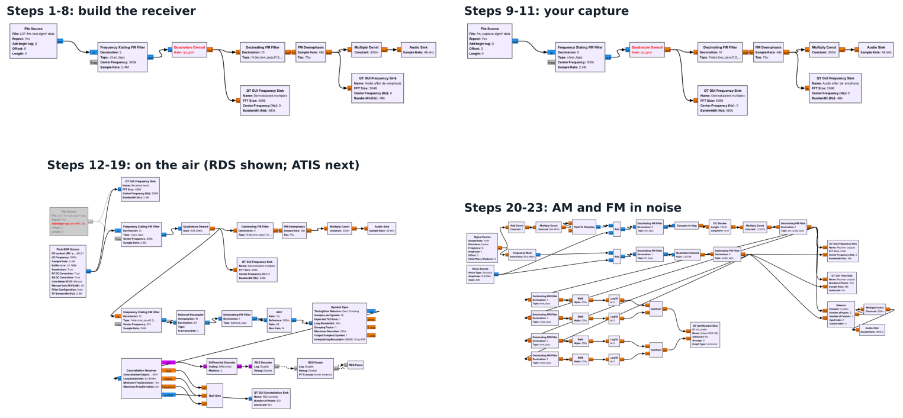
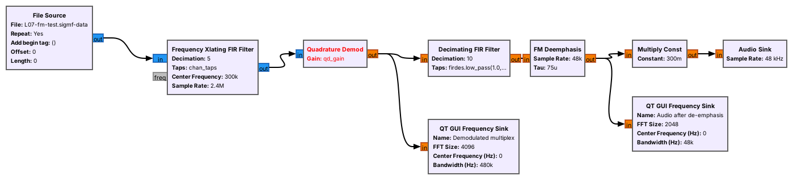
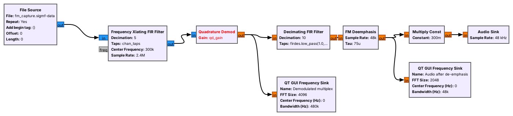
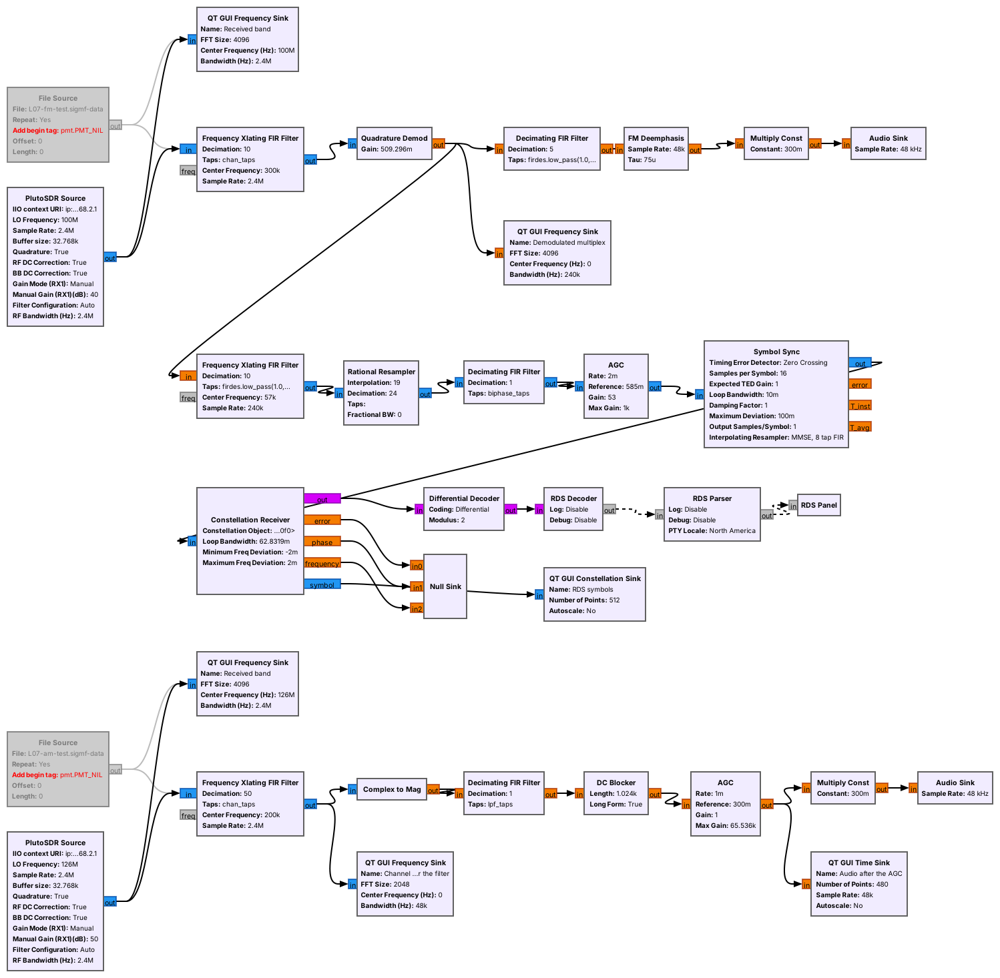
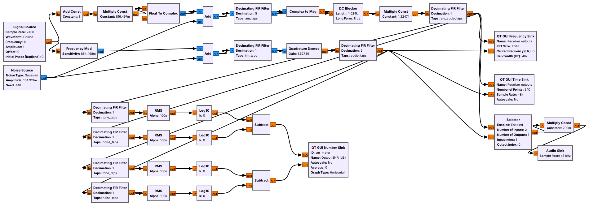

L7 Lab — AM and FM Receivers#
AM and FM Receivers
Receive a live FM broadcast and decode its RDS data.
L7 Lab · Module 3: Analog Modulation · Dr. Neil Rogers
Learning Objectives
- I can implement an FM receiver in GNU Radio, demodulate a live broadcast FM signal, and decode its RDS data.
- I can explain and demonstrate the trade-off between bandwidth and noise performance for AM vs. FM.
The Big Picture

Steps 1 to 8 build the WBFM receiver from an empty canvas and play the test file through it. Steps 9 to 11 play your own L5 capture and look at its demodulated multiplex. Steps 12 to 19 receive on the air with the PlutoSDR: a broadcast station and its RDS data with L07-rds-rx.grc, then an ATIS with L07-am-rx.grc. Steps 20 to 23 run L07-am-vs-fm.grc and lower the Input SNR at 50 and then 5 kHz of deviation, listening for where FM breaks up. Your Part 1 settings go into Steps 5 and 17, the two click readings go in Table B of the packet, and the screenshots go in Figures 1 to 4. Nothing in this lab transmits.
Predict First
Choose a deviation. The plot runs from a strong signal on the left to a weak one on the right. Before you press Show the meters, mark the Input SNR at which you think FM’s output falls to AM’s, by clicking the plot or with the My Prediction slider. Changing the deviation or your mark hides the answer again, so each guess comes first. The curves are the two meters of L07-am-vs-fm.grc read at 25 and 35 kHz of deviation; today you listen at 5 and 50 kHz, so nothing here is a reading you record.
Build the WBFM Receiver
Start from an empty QT GUI canvas, not
L07-wbfm-rx.grc.Decimate by 5 at the channel filter and by 10 at the audio filter.
Play the test file; screenshot the canvas and the window.

Gather the files. Put the six flowgraphs from the Lesson 7 page and
L05-fm-spectrum.grcfrom the L5 Lab in one folder with yourfm_capture.sigmf-dataandfm_capture.sigmf-metafrom the L5 Lab. RunL07-fm-test-tx.grcandL07-am-test-tx.grcthere once each before the period; each writes 76.8 MB of samples and stops on its own, and the room’s network may not let you download during class. OpenL07-rds-rx.grcand check that GRC reports no missing blocks; if it reports the RDS blocks missing, runmamba install gnuradio-rdsfrom the radioconda prompt.Start GRC. Choose File, New, QT GUI, and save the flowgraph in that folder. Set
samp_rateto 2.4e6. Add a QT GUI Entryfc_mhzlabeled “SDR center (MHz)”, default 100.0, a QT GUI Entrystation_mhzlabeled “Station (MHz)”, default 100.3, and a QT GUI Rangevolfrom 0 to 1.Add the source. Add a File Source of type complex on
L07-fm-test.sigmf-data, with Repeat set to Yes.Add the channel filter. Add a Low-pass Filter Taps variable
chan_taps: cutoff 105e3, transition 30e3, sample ratesamp_rate. Use it in a Frequency Xlating FIR Filter with decimation 5, center frequency(station_mhz - fc_mhz) * 1e6, and sample ratesamp_rate.Add the demodulator. Add a Quadrature Demod with the gain from your Part 1 Table A. Put a float QT GUI Frequency Sink titled “Demodulated multiplex” on its output, with bandwidth
samp_rate/5.Add the audio filter. Add a float Decimating FIR Filter with decimation 10 and taps
firdes.low_pass(1, samp_rate/5, 15e3, 3e3).Finish. Add FM Deemphasis at 48 kHz with a 75 μs time constant, a Multiply Const of
vol, an Audio Sink at 48 kHz, and a float QT GUI Frequency Sink on the de-emphasis output with bandwidth 48e3. Do not add a Throttle: the sound card paces the flowgraph.Run it. Run it with the volume low and check that the frequency sink on the de-emphasis output shows the test station’s two tones and nothing else above the noise floor. Take one screenshot that shows your canvas and the running window side by side, and paste it as Figure 1. If the audio is distorted or the tones sit far below the top of the sink, check the Quadrature Demod gain first.
Play Your Capture
Point the File Source at your
fm_capture.sigmf-data.Enter its center frequency and the station.
Screenshot the demodulated multiplex.

Change the file. Stop your receiver and set the File Source’s file to
fm_capture.sigmf-data. It holds the same raw complex floats as the test file.Tune it. Run it. Type the center frequency from
fm_capture.sigmf-metainto SDR center (MHz), in megahertz, and the station you centered in the L5 Lab into Station (MHz). The capture is about 3 s long, and the File Source repeats it.Screenshot the multiplex. Take a screenshot of the Demodulated multiplex sink and paste it as Figure 2.
Receive on the Air
Find a strong station with
L05-fm-spectrum.grc.Decode its RDS data with
L07-rds-rx.grcon the PlutoSDR.Receive the ATIS with
L07-am-rx.grc.Screenshot both.

Find a station. Screw the antenna onto the PlutoSDR’s RX port. Run
L05-fm-spectrum.grc, find a strong station between 88 and 108 MHz, and stop it; only one flowgraph can stream from the Pluto at a time.Switch the RDS receiver to the air. Open
L07-rds-rx.grc. Right-click the File Source and choose Disable; right-click the PlutoSDR Source and choose Enable.Tune it. Run it. Type an SDR center (MHz) about 300 kHz below the station, so the DC spike stays out of the channel, set Station (MHz) to the station’s frequency, and set RF gain (dB) to the gain you chose in Step 12 of the L5 Lab.
Screenshot the RDS data. Wait for the station name, and compare it with the call sign the station announces or the FCC lists for that frequency. If no name appears, raise the gain or choose a stronger station; RDS needs more signal than the audio does. Take one screenshot of the constellation and the panel and paste it as the left pane of Figure 3.
Switch the AM receiver to the air. Stop it. Open
L07-am-rx.grc, disable its File Source, and enable its PlutoSDR Source.Tune the ATIS. Run it. Type an SDR center (MHz) 200 kHz above the ATIS frequency from your Part 1 Table A, so the DC spike stays out of the channel as in Step 14 (either side of the station works), set Station (MHz) to the ATIS frequency, and set RF gain (dB) to 50. If the voice sounds muffled, the Pluto’s frequency may be a few kilohertz off; nudge Station (MHz) by 1 to 3 kHz.
Screenshot the ATIS. Paste a screenshot of the receiver window as the right pane of Figure 3.
Listen as the gain drops. Lower the RF gain until the voice is hard to understand, and listen to how the audio changes on the way down.
AM and FM in the Same Noise
Run
L07-am-vs-fm.grcat 50 kHz of deviation.Lower the Input SNR until FM first clicks; keep going, listening to both.
Repeat the click search at 5 kHz.

Run it. Open and run
L07-am-vs-fm.grc. Set FM deviation (Hz) to 50000, leave Input SNR in 10 kHz (dB) at 30, and choose FM under Listen to. Paste a screenshot of the window as the left pane of Figure 4.Find the clicks at 50 kHz. Lower the Input SNR 1 dB at a time, listening after each step, and record the value at which you first hear clicks.
Listen to both. Keep lowering the Input SNR to 10 dB, switching Listen to between AM and FM as you go, and paste a screenshot of the window at 10 dB as the right pane of Figure 4.
Find the clicks at 5 kHz. Set the Input SNR back to 30 and the FM deviation to 5000, choose FM, and lower the Input SNR as in Step 21. Record where the clicks begin.
No Hardware?
If the PlutoSDR, the station name, or the ATIS does not work
Steps 1 to 11 and 20 to 23 need no radio. If your PlutoSDR is missing or will not open, do Steps 12 to 19 at the laptop of a classmate whose PlutoSDR works, taking turns, and take your own screenshots; note whose PlutoSDR you used on the packet’s Documentation line. Bring the failed Pluto to EI.
If no ATIS reaches the room, try a window, a higher floor, or the airport’s other frequency; aircraft band stations need line of sight. If none works, run L07-am-rx.grc with its File Source enabled, as the flowgraph ships, for Steps 17 to 19, and write “Simulated” on the right pane of Figure 3 and on the Documentation line. If no broadcast station gives a name, run L07-rds-rx.grc on its File Source and label the left pane the same way.
An Audio Sink that cannot open your sound card stops the flowgraph; plug in your headphones and run it again, as in the L6 Lab.
Your Part 2 Entries
This frame collects every box you filled in on this page. Your entries stay in this browser only, saved as you type. Download my packet writes them into the Measured cells of the blank packet and saves the PDF. The download locks every field, the Predicted cells included, so type your predictions into your own copy of the packet first, then use Fill my own copy and choose that file: the page keeps your predictions and adds your measurements beside them. Paste Figures 1 to 4 and write Part 3 in your copy, or on the printout, and upload one PDF to Gradescope. Export entries saves a small backup file you can Import on another laptop.
Lab Packet
The L7 Lab packet is one submission, turned in complete before Lesson 8:
Part 1, Predict (individual, before the lab period): the two shaded settings in Table A, with your work for the gain attached.
Part 2, Measure (in class, on your own laptop and PlutoSDR): the white Measured cells of Table B, and Figures 1 to 4.
Part 3, Analyze (individual, after the lab): three prompts, each answered from your own tables and figures.
L07-rds-rx.grc, L07-am-rx.grc, L07-am-vs-fm.grc, and L05-fm-spectrum.grc
L07-fm-test-tx.grc and L07-am-test-tx.grc, which write the test files
For Part 3
Do Part 3 after class, with your tables and figures beside you. It asks about three comparisons:
Figure 2 against Figure 3: the parts of your capture’s multiplex, and which of them each receiver uses.
Figure 4 and Table B: the AM and FM outputs as the noise rose, and where FM broke up at each deviation.
The ATIS in Figure 3 and Step 19, against the AM and FM outputs in Step 22.
I grade each answer on a claim, the evidence from your own tables and figures, the reasoning that connects them, and the uncertainty in your readings.
Looking Ahead
Keep your receiver: Lesson 8’s FSK receiver reuses its Quadrature Demod.